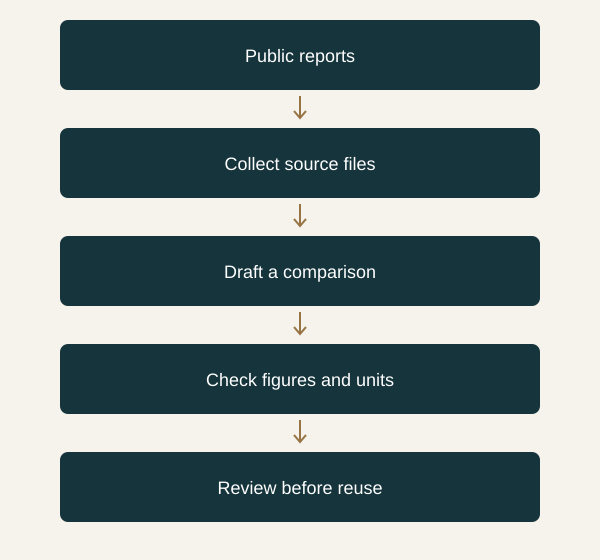

Why this caught my attention
A model leaderboard can make choosing an AI tool look straightforward. Studying finance makes me want to ask a slightly different question: can I follow how a number arrived in the final table? A convincing explanation is useful, but it does not tell me whether the model picked the right reporting period or understood the units.
Google's announcement caught my attention because it explicitly includes finance among the workflows it wants Argon to handle. That gives me a reason to follow the release. It does not yet give me evidence that it would improve my own work, and I have not tested it.
How I would use it
I would start with something small: two public annual reports from the same company and a table comparing revenue, operating profit and cash flow. I would want each extracted figure linked to its page, with the currency, reporting period and unit kept alongside it. The interesting mistakes might be mundane ones—a restated prior year, a figure in thousands, or a segment total mistaken for the whole business.
My proposed n8n workflow would collect the documents and keep the source files organised. An available model could then produce a draft table for review. I would calculate changes separately rather than rely on a paragraph to supply the arithmetic. This is a learning project I would like to build, not a verified Argon integration.
There is a fair counterargument: for a clean spreadsheet, a few formulas could do the job more cheaply and predictably. I would only add AI where interpreting the source creates work that ordinary rules cannot comfortably handle. Google's benchmark claims are a reason to investigate, not a substitute for that comparison.
Where I want to take this
Before choosing a new model, I would prepare a small reference table myself and keep track of correction time. I care about how many figures survive review and whether I can reproduce the result later. Learning to design that evaluation feels useful regardless of which provider leads next month. I would revisit Argon when wider access and usable developer documentation are confirmed.
A workflow I would like to explore

Sources
- Gemini: official announcement — Google · Published 2026-09-30; accessed 2026-10-03
- TechCrunch: discovery report — TechCrunch · Published 2026-09-30; accessed 2026-10-03